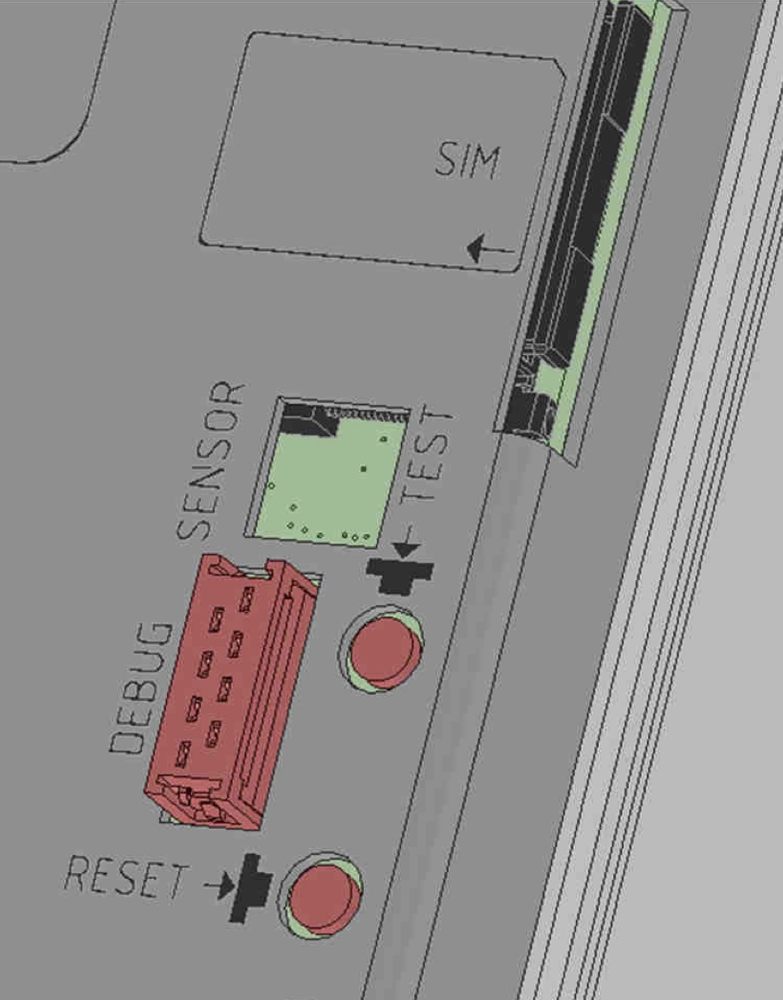
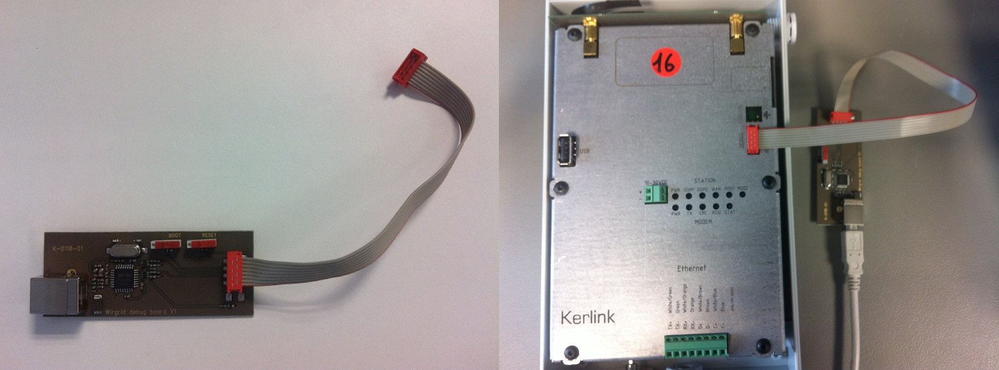
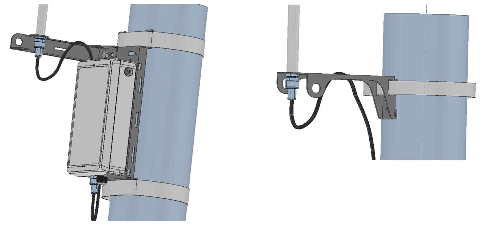

<!DOCTYPE html>
<html lang="en">
  <head>
    <meta charset="utf-8">
    <meta http-equiv="X-UA-Compatible" content="IE=edge">
    <meta name="viewport" content="width=device-width, initial-scale=1">
    <!-- The above 3 meta tags *must* come first in the head; any other head content must come *after* these tags -->

    <!-- 20111122 0939 -->

    <link rel="stylesheet" href="/docs/assets/css/main.css" />

    <!-- HTML5 shim and Respond.js for IE8 support of HTML5 elements and media queries -->
    <!-- WARNING: Respond.js doesn't work if you view the page via file:// -->
    <!--[if lt IE 9]>
      <script src="https://oss.maxcdn.com/html5shiv/3.7.3/html5shiv.min.js"></script>
      <script src="https://oss.maxcdn.com/respond/1.4.2/respond.min.js"></script>
    <![endif]-->

    <script>

    var site = {
      baseurl: '/docs',
      local: (document.location.port || document.location.protocol === 'file:')
    };

    (function(canonical) {
      if (!site.local && document.location.href.substr(0, document.location.href.length - document.location.hash.length) !== canonical) {
        window.location.replace(canonical);
      }
    })('https://www.thethingsnetwork.org/docs/draft/kerlink/');

    </script>

    <!-- Begin Jekyll SEO tag v2.1.0 -->
<title>Kerlink LoRa IoT Station - The Things Network</title>
<meta property="og:title" content="Kerlink LoRa IoT Station" />
<meta name="description" content="The Kerlink LoRa IoT Station is is an industrial solution suitable for people who want to mount the gateway outside and who have sufficient technical skills to connect, mount and maintain the device themselves." />
<meta property="og:description" content="The Kerlink LoRa IoT Station is is an industrial solution suitable for people who want to mount the gateway outside and who have sufficient technical skills to connect, mount and maintain the device themselves." />
<link rel="canonical" href="https://www.thethingsnetwork.org/docs/draft/kerlink/" />
<meta property="og:url" content="https://www.thethingsnetwork.org/docs/draft/kerlink/" />
<meta property="og:site_name" content="The Things Network" />
<meta property="og:image" content="https://www.thethingsnetwork.org/docs/draft/kerlink/kerlink.png" />
<meta property="og:type" content="article" />
<meta property="article:published_time" content="2016-12-02T10:10:23+00:00" />
<meta name="twitter:card" content="summary_large_image" />
<meta name="twitter:site" content="@thethingsnetwrk" />
<meta property="article:publisher" content="https://www.facebook.com/thethingsnetwork" />
<script type="application/ld+json">
{"@context": "http://schema.org",
"@type": "BlogPosting",
"headline": "Kerlink LoRa IoT Station",
"image": "https://www.thethingsnetwork.org/docs/draft/kerlink/kerlink.png",
"datePublished": "2016-12-02T10:10:23+00:00",
"description": "The Kerlink LoRa IoT Station is is an industrial solution suitable for people who want to mount the gateway outside and who have sufficient technical skills to connect, mount and maintain the device themselves.",
"publisher": {"@type": "Organization",
"logo": {"@type": "ImageObject",
"url": "https://www.thethingsnetwork.org/docs/assets/images/the-things-white.png"}},
"url": "https://www.thethingsnetwork.org/docs/draft/kerlink/"}</script>
<!-- End Jekyll SEO tag -->


    <link rel="apple-touch-icon-precomposed" href="https://ttnstaticfile.blob.core.windows.net/static/common/favicon/favicon-152.png">
    <meta name="msapplication-TileColor" content="#FFFFFF">
    <meta name="msapplication-TileImage" content="https://ttnstaticfile.blob.core.windows.net/static/common/favicon/favicon-144.png">
    <meta name="application-name" content="The Things Network">
    <meta name="msapplication-tooltip" content="Building a Global Internet of Things Network Together.">
    <meta name="msapplication-config" content="https://ttnstaticfile.blob.core.windows.net/static/common/favicon/ieconfig.xml">
    <link rel="icon" href="https://ttnstaticfile.blob.core.windows.net/static/common/favicon/favicon-32.png" sizes="32x32">
    <link rel="icon" href="https://ttnstaticfile.blob.core.windows.net/static/common/favicon/favicon-57.png" sizes="57x57">
    <link rel="icon" href="https://ttnstaticfile.blob.core.windows.net/static/common/favicon/favicon-76.png" sizes="76x76">
    <link rel="icon" href="https://ttnstaticfile.blob.core.windows.net/static/common/favicon/favicon-96.png" sizes="96x96">
    <link rel="icon" href="https://ttnstaticfile.blob.core.windows.net/static/common/favicon/favicon-120.png" sizes="120x120">
    <link rel="icon" href="https://ttnstaticfile.blob.core.windows.net/static/common/favicon/favicon-128.png" sizes="128x128">
    <link rel="icon" href="https://ttnstaticfile.blob.core.windows.net/static/common/favicon/favicon-144.png" sizes="144x144">
    <link rel="icon" href="https://ttnstaticfile.blob.core.windows.net/static/common/favicon/favicon-152.png" sizes="152x152">
    <link rel="icon" href="https://ttnstaticfile.blob.core.windows.net/static/common/favicon/favicon-180.png" sizes="180x180">
    <link rel="icon" href="https://ttnstaticfile.blob.core.windows.net/static/common/favicon/favicon-195.png" sizes="195x195">
    <link rel="icon" href="https://ttnstaticfile.blob.core.windows.net/static/common/favicon/favicon-228.png" sizes="228x228">
    <link rel="icon" href="https://ttnstaticfile.blob.core.windows.net/static/common/favicon/smalltile.png" sizes="128x128">
    <link rel="icon" href="https://ttnstaticfile.blob.core.windows.net/static/common/favicon/mediumtile.png" sizes="270x270">
    <link rel="icon" href="https://ttnstaticfile.blob.core.windows.net/static/common/favicon/widetile.png" sizes="558x270">
    <link rel="icon" href="https://ttnstaticfile.blob.core.windows.net/static/common/favicon/largetile.png" sizes="558x558">
    <link rel="shortcut icon" sizes="196x196" href="https://ttnstaticfile.blob.core.windows.net/static/common/favicon/favicon-196.png">
      
  </head>
  <body>

    <div id="content">
      


<div id="top" class="layout-guide container">

  <div class="row guide-nav">
    <div class="col-sm-9">
      <ol class="breadcrumb">
        <li><a href="http://www.thethingsnetwork.org/">Home</a></li>
        <li><a href="/docs/">Learn</a></li>
        
        <li class="active">Kerlink LoRa IoT Station</li>
      </ol>
    </div>
    <div class="col-sm-3 text-right">
      <a class="btn btn-default hidden-xs" href="http://github.com/TheThingsNetwork/docs/edit/master/_includes/draft/kerlink.md" target="_blank"><i class="fa fa-pencil"></i> Improve this guide</a>
    </div>
  </div>

  <div class="row">

    <div class="col-md-3" role="complementary">

      <div class="guide-switch btn-group btn-block">
        <button type="button" class="btn btn-primary btn-block dropdown-toggle" data-toggle="dropdown" aria-haspopup="true" aria-expanded="false">Guides <span class="caret"></span></button>
        <ul class="dropdown-menu" aria-labelledby="dropdownMenuButton">
          
            
            
              
                <li class="disabled"><a href="#">
              
              The Things Node
              
              </a></li>
            
              
                <li><a href="/docs/current/uno/">
              
              The Things Uno
              
              </a></li>
            
              
                <li><a href="/docs/current/arduino/">
              
              Arduino
              <span class="label label-info">SDK</span>
              </a></li>
            
              
                <li class="disabled"><a href="#">
              
              Other Devices
              
              </a></li>
            
          
            <li role="separator" class="divider"></li>
            
              
                <li class="disabled"><a href="#">
              
              The Things Gateway
              
              </a></li>
            
              
                <li><a href="/docs/current/multitech/">
              
              MultiTech Conduit
              
              </a></li>
            
              
                <li><a href="/docs/current/lorrier/">
              
              Lorrier LR2
              
              </a></li>
            
              
                <li class="disabled"><a href="#">
              
              Other Gateways
              
              </a></li>
            
          
            <li role="separator" class="divider"></li>
            
              
                <li><a href="/docs/current/dashboard/">
              
              The Things Dashboard
              
              </a></li>
            
              
                <li><a href="/docs/current/cli/">
              
              The Things CLI
              
              </a></li>
            
              
                <li><a href="https://www.thethingsnetwork.org/wiki/Backend/Overview">
              
              Architecture
              
              </a></li>
            
          
            <li role="separator" class="divider"></li>
            
              
                <li><a href="/docs/current/mqtt/">
              
              MQTT
              <span class="label label-info">API</span>
              </a></li>
            
              
                <li><a href="/docs/current/node-js/">
              
              Node.js
              <span class="label label-info">SDK</span>
              </a></li>
            
              
                <li><a href="/docs/current/node-red/">
              
              Node-RED
              <span class="label label-info">SDK</span>
              </a></li>
            
              
                <li><a href="/docs/v2-preview/java/">
              
              Java
              <span class="label label-info">SDK</span>
              </a></li>
            
              
                <li class="disabled"><a href="#">
              
              Other Platforms
              
              </a></li>
            
          
        </ul>
      </div>

      <div class="guide-sidebar hidden-xs hidden-sm">

        <div class="js-toc"></div>

        <p class="guide-top"><a href="#top">Back to top</a></p>

      </div>

    </div>

    <div class="col-md-9 js-toc-content content-body" role="main">

      
        <div class="alert alert-warning"><strong>Attention:</strong> You are reading the <small>DRAFT</small>  version of this guide. </div>
      

      
      

      <section class="panel">
        <div class="panel-body">
          <span class="label label-success pull-right">DRAFT</span>
          <h1>Kerlink LoRa IoT Station</h1>
          <p>The <a href="http://www.kerlink.fr/en/products">Kerlink LoRa IoT Station</a> is is an industrial solution suitable for people who want to mount the gateway outside and who have sufficient technical skills to connect, mount and maintain the device themselves.</p>

<p>We have tested the device and although we have remarks about the somewhat older software that is being used, this device will do the job. A trained software engineer will be able to update the device using the software from The Things Network.</p>

<p></p>

        </div>
        
      </section>

      

      
        
        
        <section class="panel">
          <div class="panel-body">
            <h1 id="specifications">Specifications</h1>

<table class="table">
  <thead>
    <tr>
      <th style="text-align: left">Name</th>
      <th style="text-align: left">Kerlink LoRa IoT Station</th>
    </tr>
  </thead>
  <tbody>
    <tr>
      <td style="text-align: left">Price</td>
      <td style="text-align: left">On request, 1.200 Euro EXW incoterms (approx. 1.500 EUR final)</td>
    </tr>
    <tr>
      <td style="text-align: left">Availability</td>
      <td style="text-align: left">Send inquiry to Kerlink Sales (sales@kerlink.fr)</td>
    </tr>
    <tr>
      <td style="text-align: left">Capacity</td>
      <td style="text-align: left">8 band</td>
    </tr>
    <tr>
      <td style="text-align: left">Casing</td>
      <td style="text-align: left">IP67 (Suitable for outdoor mounting)</td>
    </tr>
    <tr>
      <td style="text-align: left">Installation</td>
      <td style="text-align: left">requires a skilled technician</td>
    </tr>
    <tr>
      <td style="text-align: left">Hardware</td>
      <td style="text-align: left">proprietary</td>
    </tr>
    <tr>
      <td style="text-align: left">Software</td>
      <td style="text-align: left">open source &amp; proprietary</td>
    </tr>
    <tr>
      <td style="text-align: left">Backhaul</td>
      <td style="text-align: left">Ethernet (UTP) or Cellular (2G/3G)</td>
    </tr>
    <tr>
      <td style="text-align: left">LoRa Bands</td>
      <td style="text-align: left">868MHz, 915MHz or 920/925MHz (choose correct band when ordering)</td>
    </tr>
    <tr>
      <td style="text-align: left">GPS</td>
      <td style="text-align: left">Onboard GPS</td>
    </tr>
    <tr>
      <td style="text-align: left">Package</td>
      <td style="text-align: left">Kerlink IoT Station, Antenna + 1m cable, PoE injector, mounting brackets for pole mounting</td>
    </tr>
  </tbody>
</table>

          </div>
        </section>
      
        
        
        <section class="panel">
          <div class="panel-body">
            <h1 id="setup">Setup</h1>

<h2 id="main-functions">Main functions</h2>

<h3 id="power">Power</h3>
<p>The gateway get its power by PoE (Power over the Ethernet) through the UTP cable or by the 11-30 volt connector on the gateway. The 11-30 volt power connecter makes it possible to combine the gateway with a DC solar system. There is also a backup battery inside the gateway which can provide up to 1 min of power to ensure a safe shutdown of the gateway.</p>

<h3 id="data">Data</h3>
<p>The gateway can be connected to the Ethernet by either a UTP connection or by a cellular 3G network.</p>

<h3 id="antenna">Antenna</h3>
<p>It is important that the antenna is connected to the gateway before booting the gateway. Booting the gateway without an external antenna my result in permanent damage to the antenna amplifier</p>

<h2 id="utp-cable">UTP cable</h2>
<p>After unpacking the Kerlink IoT Station, open the case by putting a screwdriver in the top notch (where the antenna is located).</p>

<p></p>

<p>Connect a UTP network cable on the green connector, cable colors are noted next to the connector. You can use an existing cable by cutting of the connector of one side, or you need to make a new cable including attaching the connector (watch the coloring scheme).</p>

<p></p>

<p>Attach the UTP cable attached to the Kerlink IoT Station to the “data &amp; power Out” port of the power adapter. Connect the “data IN” port of the power adapter to your existing network. If you use POE (Power Over Ethernet) switches, the power adapter is not needed.</p>

<p></p>

<p>After powering on, check your DHCP server which IP-address the gateway uses. The LEDs inside the gateway do not work by default, they only work for about a minute after shortly pressing the “Test” button. This includes the power LEDs.</p>

<p></p>

<p>Check if the gateway is on by directing a web browser to the IP-address of the gateway, for example <code class="highlighter-rouge">http://10.1.0.117</code> (depending on the given IP-address by the DHCP server). The page will show “Hello World!” if the gateway is responding.</p>

<h2 id="sim-card">SIM-card</h2>

<ol>
  <li>Remove the SIM card holder of the Lora IoT Station by pressing with a little screwdriver, the extraction button.</li>
  <li>Place the SIM card in the SIM card holder.</li>
  <li>Insert carefully the SIM card holder with the SIM card in the LoRa IoT Station.
Configure the gateway setting for the simcard (se below)</li>
</ol>

<p></p>

          </div>
        </section>
      
        
        
        <section class="panel">
          <div class="panel-body">
            <h1 id="configuration">Configuration</h1>

<h2 id="configuring-packet-forwarder">Configuring packet forwarder</h2>
<p>To configure the gateway, you need to download The Things Network’s packet forwarder and <code class="highlighter-rouge">produsb.zip</code> from our Github.</p>

<p>Install the update the following way:</p>

<ul>
  <li>Copy the content of <code class="highlighter-rouge">produsb.zip</code> and the <code class="highlighter-rouge">dotafile</code> onto an empty USB flash drive formatted in FAT-32. Make sure there is no <code class="highlighter-rouge">.log</code> file.</li>
  <li>Plug the USB flash drive into the gateway.</li>
  <li>Wait for 5 min. During this time the gateway will reboot itself.</li>
  <li>Unplug the key and check that a <code class="highlighter-rouge">.log</code> file has appeared. The file should contain  <code class="highlighter-rouge">WirmaV2 0x080XXXXX updated</code>. This log file prevents any further installation on the gateways to avoid cyclic reboots.</li>
  <li>To redo the update on same gateway, remove this log file from the flash drive reinsert it into the gateway USB. This is not needed if you update another gateway.</li>
</ul>

<h2 id="connect-with-the-gateway">Connect with the Gateway</h2>

<h3 id="ssh-serial">SSH-Serial</h3>
<p>Logon to the gateway by using the SSH protocol, on a Mac or Linux system just use the Terminal and <code class="highlighter-rouge">run ssh root@10.1.0.117</code> (substitute by the correct IP-address). On a Windows PC you can use <a href="http://www.chiark.greenend.org.uk/~sgtatham/putty/download.html">Putty</a>. Login with the user <code class="highlighter-rouge">root</code> and default password <code class="highlighter-rouge">root</code>.</p>

<p>At your firewall system make sure the external IP-address used will map port <code class="highlighter-rouge">1700</code> to the internal IP-address of the gateway. This is needed when using NAT for internal IP-address translation.</p>

<p>Your are basically done now. For further checking continue to the next step. The following steps require some knowledge about how to use the command-line in Linux or Mac.</p>

<h2 id="wirgrid">WIRGRID</h2>
<p>The serial interface (linux console) of the gateway can also be accessed by using the QIRGRID debug tool. This tool connect to your PC by a USB (type B &gt; A) cable.</p>

<p></p>

<ol>
  <li>Connect the WIRGRID tool to your gateway and PC</li>
  <li>Look up to which port the WIRGRID is assigned to</li>
  <li>Open a serial connection with the following settings:
    <ul>
      <li><strong>Baudrate:</strong> 115200</li>
      <li><strong>Data length:</strong> 8</li>
      <li><strong>Parity:</strong> none</li>
      <li><strong>Stop bit:</strong> 1</li>
      <li><strong>Flow control:</strong> none</li>
    </ul>
  </li>
  <li>When the connection opens up, log in with the following credentials
    <ul>
      <li><strong>Login:</strong> root</li>
      <li><strong>Password:</strong> root</li>
    </ul>
  </li>
</ol>

<h2 id="check-if-the-packet-forwarder-is-running">Check if the Packet forwarder is running</h2>

<h3 id="the-packet-forwarder-on-gateway">The Packet Forwarder on gateway</h3>
<p>Use the following command on the gateway to check whether data is being sent and received:</p>

<div class="language-bash highlighter-rouge"><pre class="highlight"><code>tcpdump -i eth0 -n -vvvX host 54.229.214.112
</code></pre>
</div>

<p>The output must be somewhat similar to the following, check out if inbound as well as outbound traffic is shown:</p>

<div class="language-plaintext highlighter-rouge"><pre class="highlight"><code>tcpdump: listening on eth0, link-type EN10MB (Ethernet), capture size 65535 bytes
19:35:07.292396 IP (tos 0x0, ttl 64, id 35878, offset 0, flags [DF], proto UDP (17), length 40)
    &lt;span style="background-color: #FFFF00"&gt;10.1.0.117.37763 &gt; 54.229.214.112.1700&lt;/span&gt;: [udp sum ok] UDP, length 12
	0x0000:  4500 0028 8c26 4000 4011 96d3 0a01 0075  E..(.&amp;@.@......u
	0x0010:  36e5 d670 9383 06a4 0014 c7e2 0169 7302  6..p.........is.
	0x0020:  aa55 5a00 0806 0529                      .UZ....)
19:35:07.321453 IP (tos 0x20, ttl 46, id 1404, offset 0, flags [DF], proto UDP (17), length 32)
    &lt;span style="background-color: #FFFF00"&gt;54.229.214.112.1700 &gt; 10.1.0.117.37763&lt;/span&gt;: [udp sum ok] UDP, length 4
	0x0000:  4520 0020 057c 4000 2e11 2f66 36e5 d670  E....|@.../f6..p
	0x0010:  0a01 0075 06a4 9383 000c d978 0169 7301  ...u.......x.is.
	0x0020:  0000 0000 0000 0000 0000 0000 0000 eca3  ................
	0x0030:  5d2a                                     ]*
19:35:17.322399 IP (tos 0x0, ttl 64, id 35879, offset 0, flags [DF], proto UDP (17), length 40)
    10.1.0.117.37763 &gt; 54.229.214.112.1700: [udp sum ok] UDP, length 12
	0x0000:  4500 0028 8c27 4000 4011 96d2 0a01 0075  E..(.'@.@......u
	0x0010:  36e5 d670 9383 06a4 0014 3bfa 0151 ff02  6..p......;..Q..
	0x0020:  aa55 5a00 0806 0529                      .UZ....)
19:35:17.351482 IP (tos 0x20, ttl 46, id 2099, offset 0, flags [DF], proto UDP (17), length 32)
    54.229.214.112.1700 &gt; 10.1.0.117.37763: [udp sum ok] UDP, length 4
	0x0000:  4520 0020 0833 4000 2e11 2caf 36e5 d670  E....3@...,.6..p
	0x0010:  0a01 0075 06a4 9383 000c 4d90 0151 ff01  ...u......M..Q..
	0x0020:  0000 0000 0000 0000 0000 0000 0000 1efe  ................
	0x0030:  8b8d                                     ..
^C
4 packets captured
5 packets received by filter
0 packets dropped by kernel
</code></pre>
</div>

<p>The gateway does not automatically send data to auto include itself on the status pages of The Things Network. This will only happen after a network node has sent or is sending data via the gateway.</p>

<h3 id="packet-forwarder-status-on-ttn-network-with-noc">Packet forwarder status on TTN network with NOC</h3>

<p>When the packet forwarder is running, it report to the TTN network. The activity of all the gateways on the network can be checked by the NOC tool.</p>

<ol>
  <li>Go to the <a href="http://noc.thethingsnetwork.org:2020/api/v1/gateways">noc gateway overview</a></li>
  <li>Look up your gateway EUI by using the find-tool (<code class="highlighter-rouge">Crtl/Cmd + F</code>)</li>
  <li>
    <p>You’ll see the following information next to the EUI:</p>

    <div class="language-json highlighter-rouge"><pre class="highlight"><code><span class="p">{</span><span class="nt">"id"</span><span class="p">:</span><span class="s2">"eui-0000024b080602d9"</span><span class="p">,</span><span class="nt">"status"</span><span class="p">:{</span><span class="nt">"lastSeen"</span><span class="p">:</span><span class="s2">"1479346682871027747"</span><span class="p">}}</span><span class="w">
</span></code></pre>
    </div>
  </li>
  <li>Last Seen determines when it was the last time the gateway was shown on the TTN network. The time unit is in UNIX-time, and can be converted by converter to the standard time unit.</li>
</ol>

<h3 id="packet-forwarder-status-on-ttn-network-simple-overview">Packet forwarder status on TTN network simple overview</h3>

<p>The activity of all the gateways on the network can also be checked at <a href="https://staging.thethingsnetwork.org/gatewaystatus/">https://staging.thethingsnetwork.org/gatewaystatus/</a>.</p>

<p>This page is more simple than the raw data from option two. The only downside is that the page updates slightly slower that the previous option.</p>

          </div>
        </section>
      
        
        
        <section class="panel">
          <div class="panel-body">
            <h1 id="cellular-connection">Cellular Connection</h1>

<p>It is possible to connect the Kerlink to a GPRS/3G connection. This maybe eligible when LAN security is tight.</p>

<p>SIM card detection is only done at boot time. Insert the SIM card in the powered off LoRa station.</p>

<p>Set your APN settings in <code class="highlighter-rouge">/etc/sysconfig/network</code> (see <a href="#provider-settings">Provider Settings</a>):</p>

<div class="language-plaintext highlighter-rouge"><pre class="highlight"><code># Selector operator APN
GPRSAPN=m2minternet
# Enter pin code if activated
GPRSPIN=
# Update /etc/resolv.conf to get dns facilities
GPSDNS=yes
# PAP authentication
GPRSUSER=kerlink
GPRSPASSWORD=password

# Bearers priority order
BEARERS_PRIORITY="ppp0,eth0,eth1"
</code></pre>
</div>

<p>Configure the autoconnect in <code class="highlighter-rouge">/knet/knetd.xml</code></p>

<div class="language-xml highlighter-rouge"><pre class="highlight"><code><span class="c">&lt;!-- ############## local device configuration ############## --&gt;</span>
<span class="nt">&lt;LOCAL_DEV</span> <span class="na">role=</span><span class="s">"KNONE"</span><span class="nt">/&gt;</span>

<span class="c">&lt;!-- ############## connection parameters ############## --&gt;</span>
<span class="c">&lt;!-- enable the autoconnect feature (YES/NO) --&gt;</span>
<span class="nt">&lt;CONNECT</span> <span class="na">auto_connection=</span><span class="s">"YES"</span> <span class="nt">/&gt;</span>
<span class="c">&lt;!-- frequency of connection monitoring -ping- (in seconds) --&gt;</span>
<span class="nt">&lt;CONNECT</span> <span class="na">link_timeout=</span><span class="s">"30"</span><span class="nt">/&gt;</span>
<span class="c">&lt;!-- DNS servers will be pinged if commented or deleted. Some operators can block the ping on there DNS servers --&gt;</span>
<span class="nt">&lt;CONNECT</span> <span class="na">ip_link=</span><span class="s">"192.168.4.90"</span><span class="nt">/&gt;</span>

<span class="c">&lt;!-- ############## default area for connection policy ############## --&gt;</span>

<span class="nt">&lt;AREA</span> <span class="na">id=</span><span class="s">"default"</span><span class="nt">&gt;</span>
<span class="nt">&lt;ACCESS_POINT</span> <span class="na">bearer=</span><span class="s">"gprs"</span> <span class="nt">/&gt;</span>
<span class="nt">&lt;/AREA&gt;</span>  
</code></pre>
</div>

<blockquote>
  <p><strong>Warning:</strong> Tere is a bug in the software. When <code class="highlighter-rouge">GPRSUSER</code> and <code class="highlighter-rouge">GPRSPASSWORD</code> needs to stay empty the Kerlink does funny things and no connection is made. To resolve this problem, please apply this patch.</p>
</blockquote>

<h2 id="provider-settings">Provider Settings</h2>

<h3 id="kpn">KPN</h3>

<div class="language-plaintext highlighter-rouge"><pre class="highlight"><code># Selector operator APN
GPRSAPN=portalmmm.nl
# Enter pin code if activated
GPRSPIN=
# Update /etc/resolv.conf to get dns facilities
GPSDNS=yes
# PAP authentication
GPRSUSER=internet
GPRSPASSWORD=internet
</code></pre>
</div>

          </div>
        </section>
      
        
        
        <section class="panel">
          <div class="panel-body">
            <h1 id="mount">Mount</h1>
<p>The gateway comes standard with a mounting system which both supports a wall and pole mount option.</p>

<p>It is recommended to mount the gateway outside as it’ll improve the coverage. This should also be quite easy as the gateway is water proof and can have an offsite power supply dude to the PoE integration.</p>

<h2 id="flat-surface">Flat surface</h2>

<ul>
  <li>The gateway can be mounted against a wall as show in the picture below</li>
  <li>The antenna can be mounted on the holder. This holder can be mounted on the gateway frame or the wall it self</li>
</ul>

<p>
## Poll (with straps)</p>

<ul>
  <li>The gateway can be mounted against a pole by using straps</li>
  <li>The antenna can be mounted against the frame of the gateway or the pole by using a strap.</li>
</ul>

<p></p>

<h2 id="poll-with-u-bolt">Poll (with u-bolt)</h2>

<ul>
  <li>The gateway kit comes standard with a U-bolt. The gateway can be mounted against a pole by using this U-bolt.</li>
  <li>The antenna rests upon the gateway frame in this case.</li>
</ul>

<p></p>


          </div>
        </section>
      

    </div>

  </div>
</div>

<div class="modal fade" id="lightbox" tabindex="-1" role="dialog">
  <div class="modal-dialog text-center" role="document" style="width:auto;padding:20px;">
    <a href="https://ttnstaticfile.blob.core.windows.net/static/ttn/media/logo/ttn-logo.png"></a>
  </div>
</div>

    </div>

    <script src="/docs/assets/js/bundle.js"></script>
    <script src="https://www.thethingsnetwork.org/navbar.js"></script>
    <script src="https://ttnstaticfile.blob.core.windows.net/static/common/js/ga.js"></script>

  </body>
</html>
